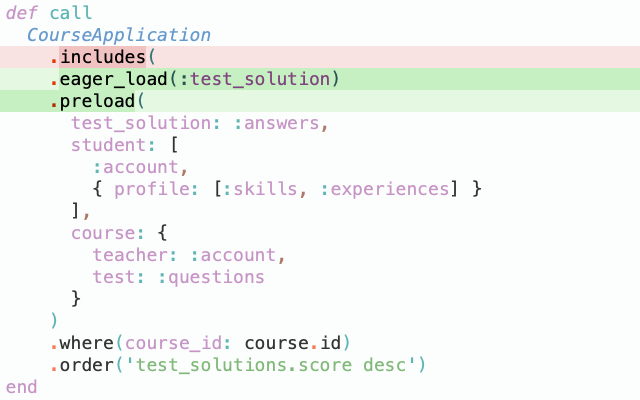
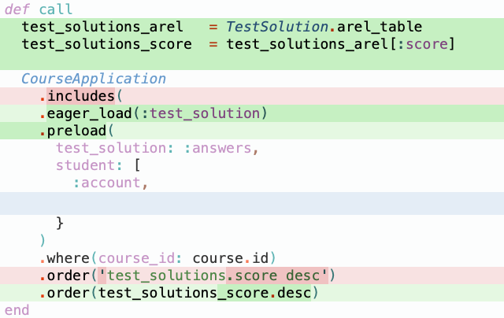

<!DOCTYPE html>
<html lang="en">
  <head>
    <meta charset="utf-8" />
    <meta name="viewport" content="width=device-width, initial-scale=1.0, maximum-scale=1.0, user-scalable=no" />

    <title></title>
    <link rel="stylesheet" href="dist/reveal.css" />
    <link rel="stylesheet" href="dist/theme/black.css" id="theme" />
    <link rel="stylesheet" href="plugin/highlight/zenburn.css" />
	<link rel="stylesheet" href="css/layout.css" />
	<link rel="stylesheet" href="plugin/customcontrols/style.css">


    <script defer src="dist/fontawesome/all.min.js"></script>

	<script type="text/javascript">
		var forgetPop = true;
		function onPopState(event) {
			if(forgetPop){
				forgetPop = false;
			} else {
				parent.postMessage(event.target.location.href, "app://obsidian.md");
			}
        }
		window.onpopstate = onPopState;
		window.onmessage = event => {
			if(event.data == "reload"){
				window.document.location.reload();
			}
			forgetPop = true;
		}

		function fitElements(){
			const itemsToFit = document.getElementsByClassName('fitText');
			for (const item in itemsToFit) {
				if (Object.hasOwnProperty.call(itemsToFit, item)) {
					var element = itemsToFit[item];
					fitElement(element,1, 1000);
					element.classList.remove('fitText');
				}
			}
		}

		function fitElement(element, start, end){

			let size = (end + start) / 2;
			element.style.fontSize = `${size}px`;

			if(Math.abs(start - end) < 1){
				while(element.scrollHeight > element.offsetHeight){
					size--;
					element.style.fontSize = `${size}px`;
				}
				return;
			}

			if(element.scrollHeight > element.offsetHeight){
				fitElement(element, start, size);
			} else {
				fitElement(element, size, end);
			}		
		}


		document.onreadystatechange = () => {
			fitElements();
			if (document.readyState === 'complete') {
				if (window.location.href.indexOf("?export") != -1){
					parent.postMessage(event.target.location.href, "app://obsidian.md");
				}
				if (window.location.href.indexOf("print-pdf") != -1){
					let stateCheck = setInterval(() => {
						clearInterval(stateCheck);
						window.print();
					}, 250);
				}
			}
	};


        </script>
  </head>
  <body>
    <div class="reveal">
      <div class="slides"><section ><section data-markdown><script type="text/template"><div class="reset-margin" style="position: absolute; left: 0px; top: 350px; height: 0px; min-height: 0px; width: 960px; display: flex; flex-direction: column; align-items: center; justify-content: space-evenly" >

## `ActiveRecord .includes`
### `do you use it consciously?`
</div>

<div class="reset-margin" style="position: absolute; left: 480px; top: 630px; height: 70px; min-height: 70px; width: 480px; display: flex; flex-direction: column; align-items: center; justify-content: space-evenly" >

*Alexander Repnikov*
</div>

<!-- .slide: class="drop" data-background-image="presentations/title_background.png" -->
</script></section><section data-markdown><script type="text/template"><!-- .slide: data-background-image="presentations/regular_page_background.png" --> 

## `Agenda`
- What is includes and why we use it.
- How it works
- Why it is important to be aware of it
- Bonus
</script></section><section data-markdown><script type="text/template"><!-- .slide: data-background-image="presentations/regular_page_background.png" -->

```Ruby
  CourseApplication
    .where(course_id: course.id)
    .map { |application| application.test_solution.score }
```
<!-- .element: class="fragment" data-fragment-index="1" --> 

<p style="line-height: 0" class="reset-paragraph image-paragraph"></img></p>


```Ruby
  class CourseApplication < ApplicationRecord
    belongs_to :course
    belongs_to :student
    has_one :test_solution
  end

```
<!-- .element: class="fragment" data-fragment-index="2" --> 

<aside class="notes"><ol>
<li>N+1 Error: Ilość zapytań do bazy danych zależy od długości listy po której iterujemy się</li>
<li>Explain loop</li>
<li>Opowiedz o SimpleAcademy</li>
</ol>
</aside></script></section><section data-markdown><script type="text/template"><!-- .slide: data-background-image="presentations/regular_page_background.png" -->

##### `Includes`
<p style="line-height: 0" class="reset-paragraph image-paragraph"></img></p>


<p style="line-height: 0" class="reset-paragraph image-paragraph"></img></p>


<p style="line-height: 0" class="reset-paragraph image-paragraph"></img></p>


<p style="line-height: 0" class="reset-paragraph image-paragraph"></img></p>


<p style="line-height: 0" class="reset-paragraph image-paragraph"></img></p>


<aside class="notes"><ol>
<li>Includes - standardowy sposob na N+1<ol>
<li>załadowuje asocjacje naszego module</li>
</ol>
</li>
<li>odpowiada <code>preload</code></li>
</ol>
</aside></script></section><section data-markdown><script type="text/template"><!-- .slide: data-background-image="presentations/regular_page_background.png" -->

##### `Includes vs Eager load`<!-- .element: class="fragment" data-fragment-index="2" -->

<p style="line-height: 0" class="reset-paragraph image-paragraph"></img></p>

<!-- .element: class="fragment" data-fragment-index="1" -->

<p style="line-height: 0" class="reset-paragraph image-paragraph"></img></p>


<p style="line-height: 0" class="reset-paragraph image-paragraph"></img></p>


<aside class="notes"><ol start="0">
<li>Super poprawilismy czas ładowania strony</li>
<li> Wiekszość z was pewnie widziała też zapytanie takiej postaci</li>
<li>odpowiada <code>eager_load</code></li>
</ol>
</aside></script></section><section data-markdown><script type="text/template"><!-- .slide: data-background-image="presentations/regular_page_background.png" -->

###  `How ActiveRecords decide which query build and why?`

<aside class="notes"><ol>
<li>Pytanie (ze slajdu)</li>
</ol>
</aside></script></section><section data-markdown><script type="text/template"><!-- .slide: data-background-image="presentations/regular_page_background.png" -->

##### `Includes transformations`

<split no-margin>
<p style="line-height: 0" class="reset-paragraph image-paragraph"></img></p>

<p style="line-height: 0" class="reset-paragraph image-paragraph"></img></p>

<p style="line-height: 0" class="reset-paragraph image-paragraph"></img></p>

</split>
<split no-margin>
<p style="line-height: 0" class="reset-paragraph image-paragraph"></img></p>

<p style="line-height: 0" class="reset-paragraph image-paragraph"></img></p>

<p style="line-height: 0" class="reset-paragraph image-paragraph"></img></p>

</split>

<aside class="notes"><p>Jesli w klauzuli bazujemy na polu tabelki, którą includujemy</p>
<p><em>domyślnie includes jest preloadem, ale jeśli trzeba to zmienia się na eager_loads.</em></p>
</aside></script></section><section data-markdown><script type="text/template"><!-- .slide: data-background-image="presentations/regular_page_background.png" -->

##### `Simple, Right?`

##### `and it should be like that.`<!-- .element: class="fragment" data-fragment-index="1" -->

##### `But behind simplicity`<!-- .element: class="fragment" data-fragment-index="2" -->

##### `hides a trap`<!-- .element: class="fragment" data-fragment-index="2" -->


<aside class="notes"><ol>
<li>Prostę, prawda?</li>
<li>I tak też ma być.<ol>
<li>Ideą za <code>includes</code> - uprościć życie programiście</li>
<li>powiedz co potrzebujesz, a Rails to zrobi reszte</li>
<li>i nie ma nic za tym zlego - includes dziala dobrze.</li>
</ol>
</li>
<li>Pulapka:<ol start="6">
<li>i za tą prostotą kryje się pułapka na którą trafiliśmy kilka tygodni temu w moim aktualnym projekcie</li>
</ol>
</li>
</ol>
</aside></script></section><section data-markdown><script type="text/template"><!-- .slide: data-background-image="presentations/regular_page_background.png" -->

##### `Production story` <!-- .element: style="margin-bottom: 0em" -->
<split even >
<p style="line-height: 0" class="reset-paragraph image-paragraph"></img></p>

<p style="line-height: 0" class="reset-paragraph image-paragraph"></img></p>

</split>

<aside class="notes"><ol>
<li>Opowiesc o zadanie<ol>
<li>zadanie</li>
<li>log -&gt; n+1</li>
<li>add associations to include</li>
</ol>
</li>
<li>Zrobmy to samo<ol>
<li>tests + staging -&gt; OK</li>
<li>production -&gt; FAIL</li>
</ol>
</li>
<li>BIG Eager Load</li>
<li>problem jest wlasnie w tej prostocie<ol>
<li>order -&gt; require 1 table</li>
<li>includes -&gt; eager_load -&gt; join all tables</li>
<li>Nasze przekonanie ze na kazde n+1 wystarczy tylko wrzucic do includes, ale okazalo się że nie zawsze jest tak prosto.</li>
</ol>
</li>
</ol>
</aside></script></section><section data-markdown><script type="text/template"><!-- .slide: data-background-image="presentations/regular_page_background.png" -->

##### `Eager Load and preload`

<p style="line-height: 0" class="reset-paragraph image-paragraph"></img></p>


<p style="line-height: 0" class="reset-paragraph image-paragraph"></img></p>


<aside class="notes"><ol>
<li>rozbicie includes</li>
<li>dziala</li>
<li>To co chcialem przekazac<ol>
<li>if includes &gt; 5 associations -&gt; think is it what you really want?</li>
</ol>
</li>
</ol>
</aside></script></section><section data-markdown><script type="text/template"><!-- .slide: data-background-image="presentations/regular_page_background.png" -->

## `Bonus`
#### `Do you know what Arel is?`<!-- .element: class="fragment fade-out" data-fragment-index="1" -->

#### `And who use Arel in everyday?`<!-- .element: class="fragment" data-fragment-index="1" -->
</script></section><section data-markdown><script type="text/template"><!-- .slide: data-background-image="presentations/regular_page_background.png" -->

## `Arel`
Arel Really Exasperates Logicians

- Arel is a SQL Abstract Syntax Tree manager for Ruby<!-- .element: style="font-size: x-large" class="fragment" data-fragment-index="1" -->
- Arel is integrated to Rails since Rails 3<!-- .element: style="font-size: x-large" class="fragment" data-fragment-index="2" -->
- And integration grows stronger with each sequential release of Rails<!-- .element: style="font-size: x-large" class="fragment" data-fragment-index="3" -->

<p style="line-height: 0" class="reset-paragraph image-paragraph"></img></p>


<aside class="notes"><ol>
<li>Arel naprawdę irytuje logików</li>
<li></li>
<li></li>
<li>spójrzemy na nasz przykład<ol>
<li>includes i where &lt;- AREL</li>
<li>oreder &lt;- String SQL</li>
</ol>
</li>
</ol>
</aside></script></section><section data-markdown><script type="text/template"><!-- .slide: data-background-image="presentations/regular_page_background.png" -->

##### `Replace string SQL with ARel`


<p style="line-height: 0" class="reset-paragraph image-paragraph"></img></p>


<p style="line-height: 0" class="reset-paragraph image-paragraph"></img></p>


<aside class="notes"><p>1.
2.
3. Mozna pomyslec: &quot;E tam, String SQL poradzil sobie, a Arel nie&quot;
    1. celowe przez autora
    2. force DEV to think
4. poprawmy ten blad</p>
</aside></script></section><section data-markdown><script type="text/template"><!-- .slide: data-background-image="presentations/regular_page_background.png" -->

##### `Arel with joins and preload`

<split no-margin>
<p style="line-height: 0" class="reset-paragraph image-paragraph"></img></p>

<p style="line-height: 0" class="reset-paragraph image-paragraph"></img></p>

<p style="line-height: 0" class="reset-paragraph image-paragraph"></img></p>

</split>

<aside class="notes"><ol>
<li></li>
<li>zwrocic uwage na log -&gt; Preload</li>
<li>show preload</li>
<li>Production story - if AREL</li>
</ol>
</aside></script></section><section data-markdown><script type="text/template"><!-- .slide: data-background-image="presentations/regular_page_background.png" -->

##### `Arel with joins and preload`

<split no-margin>
<p style="line-height: 0" class="reset-paragraph image-paragraph"></img></p>

<p style="line-height: 0" class="reset-paragraph image-paragraph"></img></p>

<p style="line-height: 0" class="reset-paragraph image-paragraph"></img></p>

</split>

<aside class="notes"><ol>
<li>join ale nie korzystamy z tego</li>
</ol>
</aside></script></section><section data-markdown><script type="text/template"><!-- .slide: data-background-image="presentations/regular_page_background.png" -->

##### `The solution`


<p style="line-height: 0" class="reset-paragraph image-paragraph"></img></p>


<p style="line-height: 0" class="reset-paragraph image-paragraph"></img></p>


<aside class="notes"><ol>
<li>wykorzystujemy join</li>
<li>ANALIZE oba rozwiazania:<ol>
<li>eager_load + preload</li>
<li>includes + Arel</li>
<li>Better: first<ol>
<li>what if String SQL in future?</li>
<li>QueryObject -&gt; DEV will see and think why at least</li>
</ol>
</li>
</ol>
</li>
</ol>
</aside></script></section><section data-markdown><script type="text/template"><!-- .slide: data-background-image="presentations/regular_page_background.png" -->

##### `Summary`

1. Be careful with .includes when it has quite a bit of associations ( > 4 association )<!-- .element: class="fragment" data-fragment-index="1" -->
	- it might be BIG JOIN SQL ( eager_load )<!-- .element: class="fragment" data-fragment-index="2" -->
	   
2. Use Arel syntax<!-- .element: class="fragment" data-fragment-index="3" -->
	- it is simple and could be readable<!-- .element: class="fragment" data-fragment-index="4" -->
	- and it will allow Arel to understand what you want and do his magic<!-- .element: class="fragment" data-fragment-index="4" -->

3. String SQL?<!-- .element: class="fragment" data-fragment-index="5" -->
	- feel warned :)<!-- .element: class="fragment" data-fragment-index="6" -->


<aside class="notes"><p>na koniec: </p>
<ol>
<li>Ale jak by nie ten SQL string to nie było by problemu </li>
<li>i nie powstala by ta prezentacje </li>
<li>co znaczy ze nie podzielilbym sie z wami dzis ta wiedza</li>
<li>ktora mam nadzieje was zaciekawila</li>
<li>na tym dziekuje :)</li>
</ol>
</aside></script></section><section data-markdown><script type="text/template"><!-- .slide: data-background-image="presentations/regular_page_background.png" -->

## Thank you!!!

</script></section></section></div>
    </div>

    <script src="dist/reveal.js"></script>

    <script src="plugin/markdown/markdown.js"></script>
    <script src="plugin/highlight/highlight.js"></script>
    <script src="plugin/zoom/zoom.js"></script>
    <script src="plugin/notes/notes.js"></script>
    <script src="plugin/math/math.js"></script>
	<script src="plugin/mermaid/mermaid.js"></script>
	<script src="plugin/chart/chart.min.js"></script>
	<script src="plugin/chart/plugin.js"></script>
	<script src="plugin/customcontrols/plugin.js"></script>

    <script>
      function extend() {
        var target = {};
        for (var i = 0; i < arguments.length; i++) {
          var source = arguments[i];
          for (var key in source) {
            if (source.hasOwnProperty(key)) {
              target[key] = source[key];
            }
          }
        }
        return target;
      }

	  function isLight(color) {
		let hex = color.replace('#', '');

		// convert #fff => #ffffff
		if(hex.length == 3){
			hex = `${hex[0]}${hex[0]}${hex[1]}${hex[1]}${hex[2]}${hex[2]}`;
		}

		const c_r = parseInt(hex.substr(0, 2), 16);
		const c_g = parseInt(hex.substr(2, 2), 16);
		const c_b = parseInt(hex.substr(4, 2), 16);
		const brightness = ((c_r * 299) + (c_g * 587) + (c_b * 114)) / 1000;
		return brightness > 155;
	}

	var bgColor = getComputedStyle(document.documentElement).getPropertyValue('--r-background-color').trim();

	if(isLight(bgColor)){
		document.body.classList.add('has-light-background');
	} else {
		document.body.classList.add('has-dark-background');
	}

      // default options to init reveal.js
      var defaultOptions = {
        controls: true,
        progress: true,
        history: true,
        center: true,
        transition: 'default', // none/fade/slide/convex/concave/zoom
        plugins: [
          RevealMarkdown,
          RevealHighlight,
          RevealZoom,
          RevealNotes,
          RevealMath.MathJax3,
		  RevealMermaid,
		  RevealChart,
		  RevealCustomControls,
        ],

		mathjax3: {
			mathjax: 'plugin/math/mathjax/tex-mml-chtml.js',
		},

		customcontrols: {
			controls: [
			]
		},
      };

      // options from URL query string
      var queryOptions = Reveal().getQueryHash() || {};

      var options = extend(defaultOptions, {"width":960,"height":700,"margin":0.04,"controls":true,"progress":true,"slideNumber":false,"transition":"slide","transitionSpeed":"default"}, queryOptions);
    </script>

    <script>
      Reveal.initialize(options);
    </script>
  </body>
</html>
